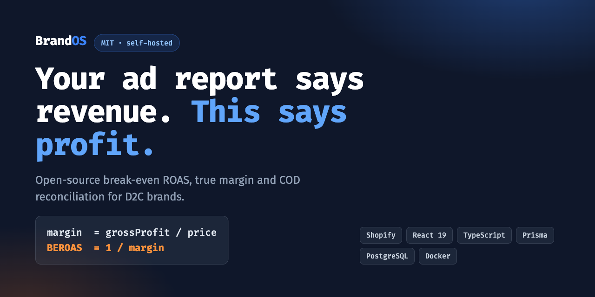

Brand OS: a profit dashboard for COD-heavy D2C brands
Revenue dashboards lie when failed cash-on-delivery deliveries and returns eat the margin. Brand OS reports true profit, then tells your media buyer the exact break-even ROAS each product has to beat.

Your revenue dashboard is telling a comfortable lie
If you sell direct to consumers in a cash-on-delivery market, orders are up and the ad account looks healthy. Then the courier returns a share of the shipments, some of the delivered cash sits uncollected, and a run of failed deliveries quietly turns a "winning" product into an expensive one. Rent, salaries and shipping were committed before any of that was known. At the end of the month the store grew, but the money did not.
Most analytics tools are built around card payments and clean attribution. They count an order when it is placed, not when it is delivered and collected. In Egypt and much of MENA, that gap is the business. Returns, failed delivery attempts and courier cash reconciliation are not edge cases; they are the usual reason margin disappears between the ad report and the bank statement.
Brand OS is an open-source, self-hosted operations dashboard for Shopify and D2C brands. It brings store orders, ad spend, shipping, product costs and overhead into one place, then answers a narrower and more useful question than "how much did we sell": what return on ad spend does each product need just to avoid losing money?
Built for the costs other dashboards ignore
Six modules that treat cash on delivery, failed deliveries and offline market stalls as normal operations, not edge cases bolted on later.
True profit per product and order
Margin after COGS, shipping, ad attribution, returns and an allocated share of monthly rent, salaries and other overhead. A margin-versus-revenue map separates what to scale from what loses money on every order.
Break-even ROAS per product
A target derived from real unit economics, plus a blended target weighted by revenue share. Actual ROAS is graded healthy, warning or critical against it, so a media buyer gets a number to beat for each SKU.
COD reconciliation and failed deliveries
Track cash still uncollected by couriers and the failed deliveries that eat margin. A shipped order is not collected revenue until the cash is in.
Inventory and restock planning
Stock levels, product detail with unit economics, size-level demand signals and a restock planner tied to the same margin numbers the ad team uses.
Offline POS for bazaars and pop-ups
Sell at events against the same inventory, with per-event stock and settlement history. No parallel spreadsheet for the market stall.
The rest of the operation
Campaign and creative-level marketing metrics, an order lifecycle with returns, expense tracking and monthly P&L, a task board, role-based access and optional Claude-generated insights over your own data.
Break-even ROAS, from real unit economics
Overhead per unit is monthly fixed cost divided by units sold that month. A product with a 25 percent net margin needs 4.0x ROAS to break even. Anything below that is a loss, however good the revenue chart looks.
overheadPerUnit = (rent + salaries + other) / unitsSoldThisMonth
grossProfit = sellingPrice - cogs - shipping - overheadPerUnit
margin = grossProfit / sellingPrice
BEROAS = 1 / margin
Your margin data should live on your server
Order data, customer lists and unit economics are the business. Brand OS is MIT licensed and runs on infrastructure you control: React 19 and TypeScript on the front end, Express and Prisma with PostgreSQL and Redis on the back, Docker Compose to bring it all up. Integration credentials are encrypted at rest. If your accounting treatment differs from the default, you can read the break-even logic and change it rather than filing a support ticket. There is no per-seat SaaS bill and no third party hosting your margin data.
Run it locally
Repository: https://github.com/azzazy967/brandos
Live site: https://azzazy967.github.io/brandos/
# 1. clone git clone https://github.com/azzazy967/brandos.git && cd brandos # 2. generate the required secrets cat > .env <<EOT POSTGRES_PASSWORD=$(openssl rand -hex 16) JWT_SECRET=$(openssl rand -hex 32) ENCRYPTION_KEY=$(openssl rand -hex 32) CORS_ORIGIN=http://localhost:3001 EOT # 3. build, apply the schema and load demo data docker compose up -d --build docker compose exec backend npx prisma db push docker compose exec backend npx tsx prisma/seed.ts
Then open http://localhost:3001. The full guide, including a non-Docker setup and production notes, is in the installation guide. Brand OS is early and under active development; issues and feature requests are welcome on the repository.
Suggested opening lines by community
We kept celebrating order volume while failed COD deliveries ate the margin. So I built a dashboard that reports profit after returns and overhead, with a break-even ROAS target per SKU.
Your media buyer should not have to guess a target ROAS. This open-source calculator derives it from COGS, shipping and this month's overhead, per product.
Built in Egypt for the reality of cash on delivery: courier reconciliation, failed deliveries and bazaar sales in the same inventory. Open source and self-hosted.
MIT-licensed D2C operations dashboard. React 19, Express, Prisma, PostgreSQL, Docker Compose. The break-even math is in the repo if you want to audit it.